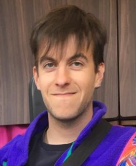
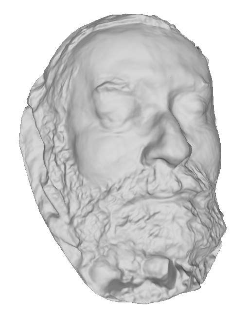
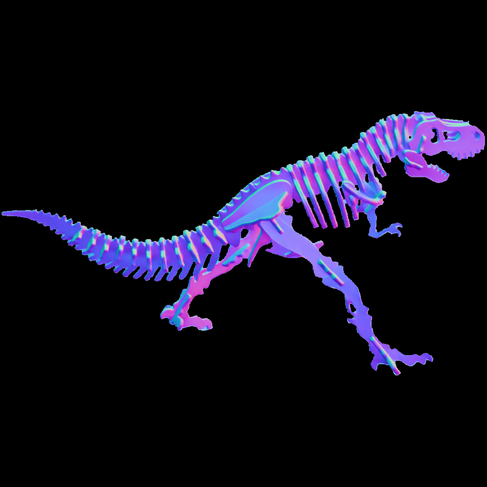
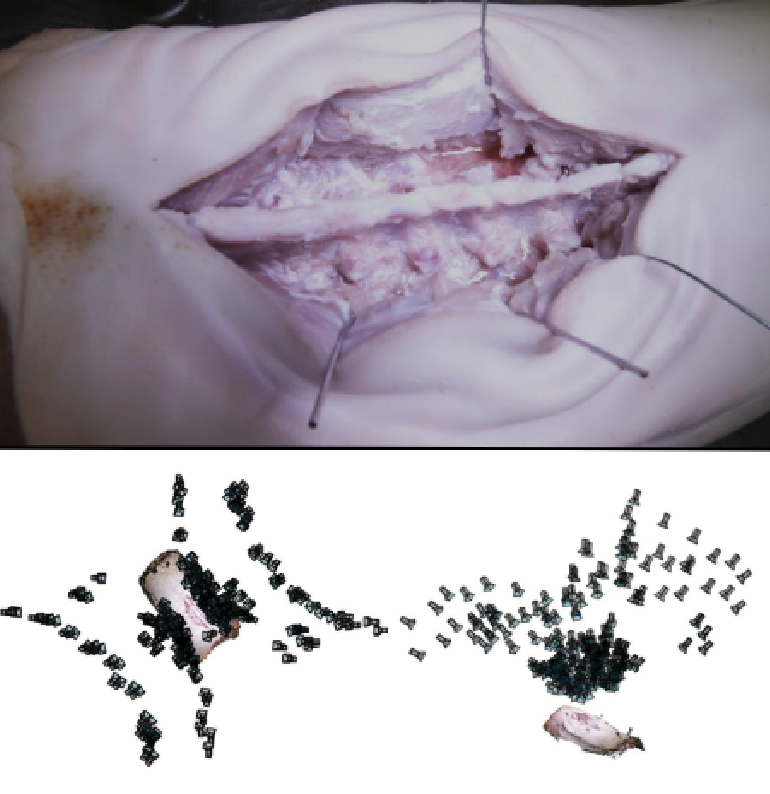
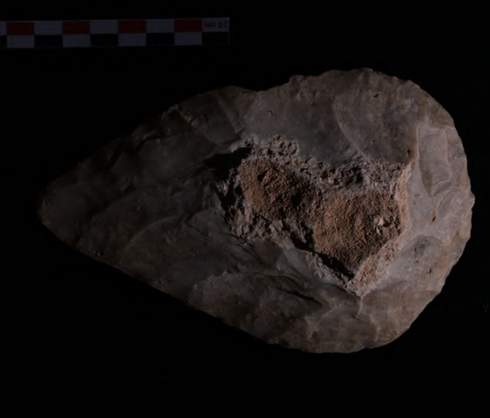
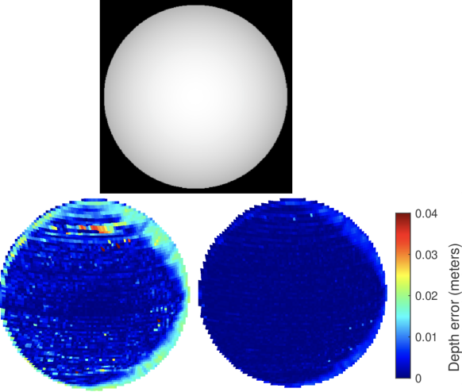
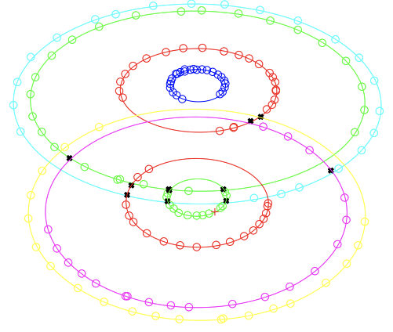
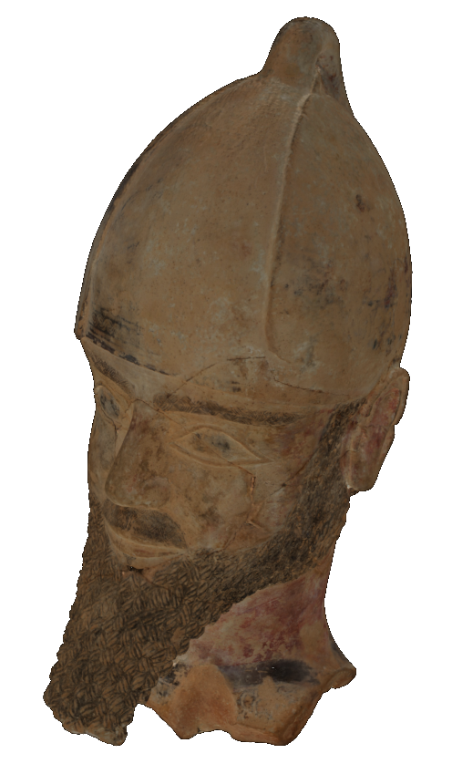

|
Baptiste Brument I am a postdoctoral researcher at IRIT/CNRS in Toulouse, France, working on the OPEN-DOPAMIn project, funded by CNRS Innovation, which aims to develop and promote open-source photogrammetry through AliceVision/Meshroom. I completed my PhD at IRIT on 3D reconstruction from optical images, where I worked on the MVPS problem and neural rendering techniques under the supervision of Lilian Calvet and Jean-Denis Durou. |
 |
News
04-2026
Our paper "Multi-view Shape-from-shading: A Tour" has been accepted to CAMC.
03-2026
I will be reviewing for NeurIPS 2026.
11-2025
I gave a talk at JC3DHN 2025 in Marseille on our cultural heritage reconstruction work.
11-2025
I will be reviewing for CVPR 2026.
10-2025
Our RNb-NeuS extension has been accepted to IJCV.
10-2025
I defended my PhD thesis at IRIT, Université de Toulouse.
06-2025
Our RNb-NeuS extension preprint is on arXiv.
01-2025
Our paper on cultural heritage 3D reconstruction is out in JCH.
|
Research |
2026 |
|
|
 |
Multi-view Shape-from-shading: A Tour
Yvain Quéau, Silvia Tozza, Baptiste Brument, Nathan Buskulic, Jean Mélou, Lilian Calvet, Jalal Fadili, Jean-Denis Durou Communications in Applied Mathematics and Computation (CAMC), 2026 (Accepted) BibTeX A survey revisiting multi-view shape-from-shading, providing intuitive evidence for uniqueness of solutions based on epipolar geometry, and presenting SfS-NeuS, an effective neural implicit surface method that outperforms state-of-the-art 3D reconstruction approaches on real-world examples. |
2025 |
|
|
 |
Multi-view Surface Reconstruction Using Normal and Reflectance Cues
Robin Bruneau*, Baptiste Brument*, Yvain Quéau, Jean Mélou, François Bernard Lauze, Jean-Denis Durou, Lilian Calvet International Journal of Computer Vision (IJCV), 2025 Project page / arXiv / IJCV / GitHub / BibTeX An extended framework that incorporates multi-view normal and reflectance maps into radiance-based surface reconstruction, achieving state-of-the-art performance on MVPS benchmark datasets with improved fine-grained detail reconstruction. |
|
 |
Acquiring Submillimeter-Accurate Multi-Task Vision Datasets for Computer-Assisted Orthopedic Surgery
Emma Most, Jonas Hein, Frédéric Giraud, Nicola Cavalcanti, Lukas Zingg, Baptiste Brument, Nino Louman, Fabio Carillo, Philipp Fürnstahl, Lilian Calvet IPCAI, 2025 arXiv / BibTeX A comprehensive approach for acquiring submillimeter-accurate multi-task vision datasets for computer-assisted orthopedic surgery applications. |

|
Combining geometric and photometric 3D reconstruction techniques for cultural heritage
Antoine Laurent, Benjamin Coupry, Baptiste Brument, Jean Mélou, Yvain Quéau, Carole Fritz, Jean-Denis Durou Journal of Cultural Heritage, 2025 Paper / BibTeX A comprehensive comparison of photogrammetry and photometric 3D reconstruction techniques for archaeological features, proposing a promising new method that combines both families in a multi-view, multi-lighting context. |
|
 |
Assessing the Quality of 3D Reconstruction in the Absence of Ground Truth: Application to a Multimodal Archaeological Dataset
Benjamin Coupry, Baptiste Brument, Antoine Laurent, Jean Mélou, Yvain Quéau, Jean-Denis Durou WACV, 2025 CVF / BibTeX A methodology to evaluate 3D reconstruction quality without ground truth reference, applied to archaeological artifacts captured using multiple imaging techniques. |
2024 |
|

|
Stéréophotométrie avec estimation locale de l'éclairage - Application à la reconstruction 3D du patrimoine archéologique
Benjamin Coupry, Jean Mélou, Antoine Laurent, Baptiste Brument, Pierre Gurdjos, Yvain Quéau, Jean-Denis Durou RFIAP, 2024 HAL / BibTeX Combinaison de photogrammétrie multi-vues et stéréophotométrie pour obtenir des reconstructions 3D à la fois précises et détaillées en estimant l'éclairage local. |

|
RNb-NeuS: Reflectance and Normal-based Multi-View 3D
reconstruction
Baptiste Brument*, Robin Bruneau*, Yvain Quéau, Jean Mélou, François Bernard Lauze, Jean-Denis Durou, Lilian Calvet CVPR, 2024 Project page / CVF / arXiv / GitHub / BibTeX A versatile paradigm for integrating multi-view reflectance and normal maps acquired through photometric stereo. |

|
Multi-view stereo of an object immersed in a refractive medium
Robin Bruneau, Baptiste Brument, Lilian Calvet, Matthew Cassidy, Jean Mélou, Yvain Quéau, Jean-Denis Durou, François Bernard Lauze JEI, 2024 HAL / SPIE / BibTeX An extended multi-view stereo technique to reconstruct objects within a transparent, refractive medium by modeling the refractive interface's geometry and solving it using a discrete method validated on synthetic and real data. |
2023 |
|

|
A shape-from-silhouette method for 3D reconstruction of
a convex polyhedron
Baptiste Brument, Lilian Calvet, Robin Bruneau, Jean Mélou, Simone Gasparini, Yvain Quéau, François Bernard Lauze, Jean-Denis Durou QCAV, 2023 HAL / SPIE / BibTeX A pipeline to recover precisely the geometry of a convex polyhedral object from multiple views under circular motion. |
|
 |
Multi-view Normal Estimation -- Application to Slanted
Plane-Sweeping
Lilian Calvet, Nicolas Maignan, Baptiste Brument, Silvia Tozza, Jean-Denis Durou, Yvain Quéau SSVM, 2023 HAL / Springer / BibTeX The paper presents a method to estimate 3D surface normals from two views with known camera poses, enhancing inter-image homography and improving photo-consistency in the "plane-sweeping" method, |
2021 |
|
|
 |
Reconstruction 3D d'un polyèdre convexe à partir de ses
silhouettes
Baptiste Brument, Lilian Calvet, Jean Mélou, Jean-Denis Durou ORASIS, 2021 HAL / BibTeX Reconstruction 3D d'un objet immergé dans un milieu réfringent, en utilisant un dioptre assimilé à un polyèdre convexe placé sur une table tournante, avec l'estimation de sa géométrie à partir des silhouettes capturées par une caméra statique. |
| * Equal contribution | |
Thesis |
|
 |
De l'utilité des modèles explicites pour la reconstruction 3D photographique
Baptiste Brument PhD thesis, Université de Toulouse, 2025 NNT : 2025TLSES166 Supervised by Lilian Calvet and Jean-Denis Durou at IRIT. |
ProjectsOpen-source tools and plugins developed as part of the OPEN-DOPAMIn project at IRIT/CNRS, extending Meshroom's 3D reconstruction pipeline with photometric stereo and neural rendering capabilities. |
Meshroom Plugins |
|
| 🔌 |
mrOpenRNb
Neural surface reconstruction from multi-view normal and reflectance maps GitHub / Original method Meshroom plugin implementing the open-source Open-RNb method for 3D surface reconstruction. Runs a two-phase albedo scaling pipeline and outputs reconstructed OBJ meshes in world coordinates from multi-view photometric stereo inputs. |
| 🔌 |
mrSDMUniPS
Universal photometric stereo via scalable diffusion models GitHub / Original method Meshroom plugin integrating SDM-UniPS, a universal photometric stereo method that estimates surface normal maps, albedo, roughness, and metallic parameter maps from multi-light image sets. |
| 🔌 |
mrLINOUniPS
Diffusion-prior photometric stereo for surface normal estimation GitHub / Original method Meshroom plugin for LINO-UniPS, a photometric stereo method leveraging diffusion model priors to estimate surface normals from multi-lighting images. Supports arbitrary numbers of input images with GPU acceleration. |
| 🔌 |
mrUniMSPS
Multi-view / single-view photometric stereo GitHub / Original method Meshroom plugin for Uni-MS-PS, a photometric stereo algorithm for per-pixel surface normal estimation supporting both calibrated (known light directions) and uncalibrated modes. |
| 📚 |
mrHelloWorld
Tutorial series for Meshroom plugin development GitHub A hands-on tutorial with 7 progressively complex examples — from a minimal node to SfMData manipulation with pyalicevision and ML inference (DeepLabV3 semantic segmentation). Serves as the learning resource for Meshroom plugin development. |
Tools & Resources |
| ⚙ |
MesoNet — Juliet Cluster
GPU computing for 3D reconstruction and deep learning Computation for this work was performed using HPC resources from the Juliet cluster operated by MesoNet. |
|
This website is inspired from Jon Barron's. Last updated May 2026. |